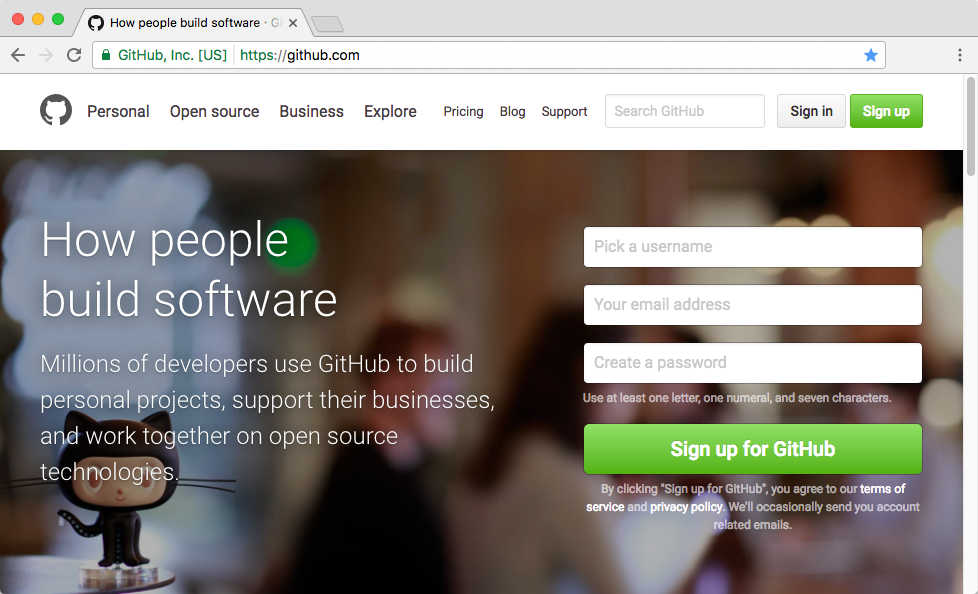
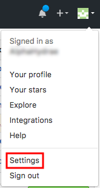
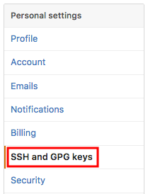
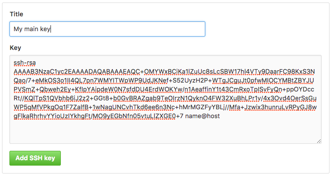
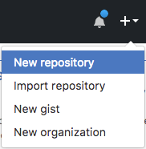
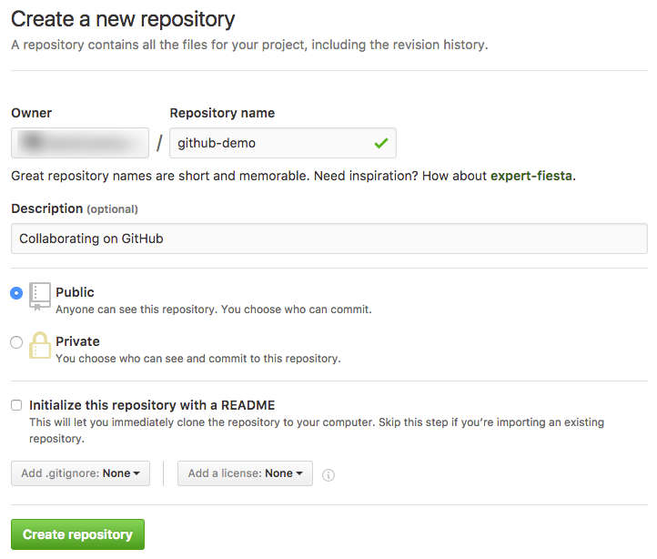
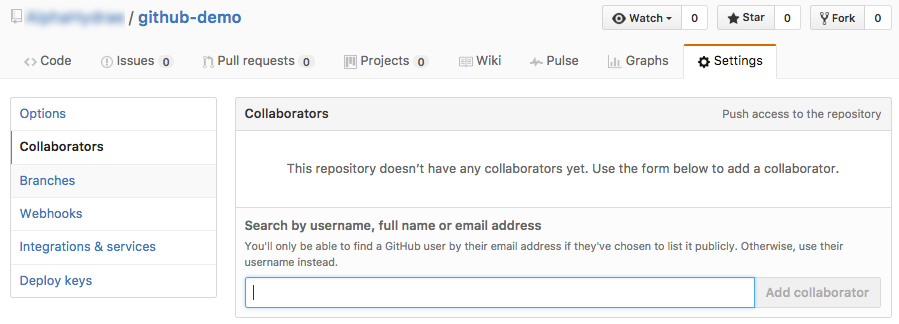
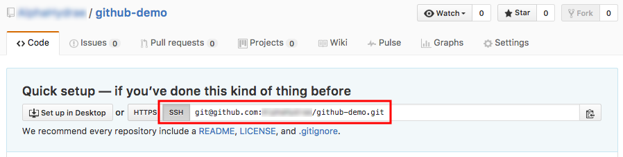
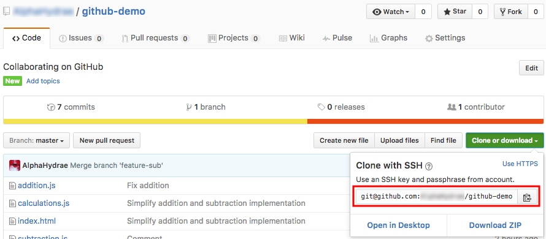

Using an SSH key arguably simplifies authentication. If you don’t have a password on your private SSH key, you won’t have to enter one when you use Git over SSH either. If you have a password, you should already have learned to use an SSH agent to avoid having to enter your password every time. Git will also use the agent to authenticate.
Hello GitHub
Learn how to collaborate on GitHub with Git.
This tutorial is meant to be performed by a group of two. Throughout the rest of the document, the members of the group will be referred to as Bob and Alice.
The tutorial follows the previous Git branching tutorial. If you have done this demonstration on your computer, you can continue from there, otherwise we will provide a repository with the correct starting state.
On this page
Table of contents
 Legend
Legend
Parts of this exercise are annotated with the following icons:
-
 A task you MUST perform to complete the exercise
A task you MUST perform to complete the exercise
-
 Optional step that you may perform to make sure that
everything is working correctly, or to set up additional tools that are not required but can
help you
Optional step that you may perform to make sure that
everything is working correctly, or to set up additional tools that are not required but can
help you
-
 Advanced tips on how to go further (or
challenges!)
Advanced tips on how to go further (or
challenges!)
 The end of the exercise
The end of the exercise-
 The architecture of the software you ran or
deployed during this exercise
The architecture of the software you ran or
deployed during this exercise
-
 Troubleshooting tips: how to fix common problems you might
encounter
Troubleshooting tips: how to fix common problems you might
encounter
You will need
Recommended reading
Going further
Create a free GitHub account
Both group members should register on GitHub:

Check your SSH key
To push code to GitHub, you will need to authenticate yourself. There are two methods of authentication: HTTPS username/password or SSH keys. We will use an SSH key in this course. You can check if you have one already with this command:
$> ls ~/.ssh
id_ed25519 id_ed25519.pub
If you see these files, then you already have an SSH key pair (id_ed25519 is
the private key, id_ed25519.pub is the public key, or it might be
id_rsa and id_rsa.pub for older SSH clients).
Create an SSH key
If you don’t have a key yet (or see a “No such file or directory” error), use
the ssh-keygen command to generate a new key pair (press Enter at every prompt
to keep the defaults):
$> ssh-keygen
Generating public/private rsa key pair.
Enter file in which to save the key (/home/.ssh/id_ed25519):
Enter passphrase (empty for no passphrase):
Enter same passphrase again:
Your identification has been saved in /home/.ssh/id_ed25519.
Your public key has been saved in /home/.ssh/id_ed25519.pub.
The key fingerprint is:
SHA256:ULmjUQDN4Snkh0s9u093mcva4cI94cDk name@host
Read SSH Key Protection again as a reminder on whether or not to set a passphrase.
Copy the SSH key
To authenticate using your SSH key on GitHub, you will need to copy your public key. You can display it on the CLI with this command:
$> cat ~/.ssh/id_ed25519.pub
ssh-ed25519 AAAAC3NzaC1lZDI1NTE5AAAAIB1TC4yqQYmOARxMMks71fUduU1Og+i name@host
Note
The file might be ~/.ssh/id_rsa.pub with older SSH clients that still use RSA
as the default algorithm. DO NOT copy the private key (the
~/.ssh/id_ed25519 or ~/.ssh/id_rsa file).
Add the SSH key to your GitHub account
On GitHub, find the SSH and GPG keys section of your account settings.


Paste your public SSH key there:

(The title of the key is not important. It’s useful when you have multiple keys, to remember which is which.)
Share changes
Let’s start sharing stuff by pushing, cloning and pulling.
Bob: clone the starting state
If Bob has performed the calculator exercise, he should continue from that repository. Otherwise, he should clone the Hello GitHub exercise repository as a clean starting state:
$> git clone https://github.com/ArchiDep/hello-github-ex.git
Then move into the repository and delete the remote:
$> cd hello-github-ex
$> git remote rm origin
Bob: create a repository on GitHub
Bob should create a repository from the GitHub menu:


Bob: add Alice as a collaborator
For this tutorial, both team members will need push access to the repository. Bob should go to the repository’s collaborator settings, and add the GitHub username of Alice as a collaborator:

Alice must then accept the invitation sent by e-mail for the change to be effective.
Bob: copy the remote SSH URL
Bob should copy the SSH URL of the GitHub repository:

Warning
Be sure to select the SSH URL, not the HTTPS URL (which might be selected by default).
Bob: add the remote to your local repository
Bob should move into his local repository and add the GitHub repository as a remote:
$> cd /path/to/projects/git-branching-or-hello-github-ex
$> git remote add origin git@github.com:bob/github-demo.git
It’s a convention to name the default remote origin.
You can check what remotes are available with git remote:
$> git remote -v
origin git@github.com:bob/github-demo.git (fetch)
origin git@github.com:bob/github-demo.git (push)
The -v (verbose) option makes the git remote command display more
information. Without it, the URLs are not shown.
Bob: push your commits to the shared repository
It’s time for Bob to put the code in the shared GitHub repository. This is
done using the git push command:
$> git push -u origin main
Counting objects: 35, done.
Delta compression using up to 8 threads.
Compressing objects: 100% (33/33), done.
Writing objects: 100% (35/35), 4.16 KiB | 0 bytes/s, done.
Total 35 (delta 14), reused 11 (delta 2)
remote: Resolving deltas: 100% (14/14), done.
To github.com:bob/github-demo.git
* [new branch] main -> main
The command git push <remote> <branch> tells Git to push the commit pointed to
by <branch> to the remote named <remote>.
The -u option (or --set-upstream) tells Git to remember that you have linked
this branch to that remote.
Bob: remote branches
The commit objects and file snapshots have been pushed (or uploaded) to the GitHub repository. This includes not only the commit pointed to by main, but also the entire history of the repository up to that commit.
Note the origin/main branch that has appeared in your local repository. This is a remote-tracking branch. It tells you where the main branch points to on the origin remote (the GitHub repository in this case).
Alice: get the remote repository’s SSH URL
Alice can now go to the repository’s page on GitHub (under Bob’s account) and copy the SSH URL:

Warning
Again, be sure to select the SSH URL, not the HTTPS URL (which might be selected by default).
Alice: clone the shared repository
Alice can now get a copy of the shared GitHub repository on her machine.
This is done using the git clone command:
$> git clone git@github.com:bob/github-demo.git
Cloning into 'github-demo'...
remote: Counting objects: 35, done.
remote: Compressing objects: 100% (21/21), done.
remote: Total 35 (delta 14), reused 35 (delta 14), pack-reused 0
Receiving objects: 100% (35/35), 4.16 KiB | 0 bytes/s, done.
Resolving deltas: 100% (14/14), done.
$> cd github-demo
The git clone [url] command copies the remote repository to your machine.
Alice: remote branches
The entire history of the project is pulled (or downloaded) from the GitHub repository. Git will also automatically switch to the main branch in the working directory so you have something to work from.
Again, Git has created a remote-tracking branch in Alice’s repository, so that you can know what the current state of the remote is.
Alice: make local changes
Alice thinks that the project’s file names are too long. Let’s fix that:
$> mv addition.js add.js
$> mv subtraction.js sub.js
$> git add .
$> git commit -m "Shorter file names"
Alice: check the state of branches
This is now the state of the shared repository and Alice’s local repository.
There is a new commit in Alice’s repository that is not in the shared GitHub repository.
Alice: push to the shared repository
Push to update the shared repository:
$> git push origin main
Bob: check the state of branches
This is now the state from Bob’s perspective.
Note that the new commit is in the shared repository (on GitHub) but that the remote-tracking branch origin/main is not up-to-date in Bob’s repository.
Git does not automatically synchronize repositories. As far as Bob knows
looking at information from his local repository, the main branch still points
to 4f94ba in the shared repository.
Bob: fetch changes from the shared repository
Bob should now get the changes from the shared repository:
$> git fetch origin
remote: Counting objects: 2, done.
remote: Compressing objects: 100% (1/1), done.
remote: Total 2 (delta 1), reused 2 (delta 1), pack-reused 0
Unpacking objects: 100% (2/2), done.
From github.com:bob/github-demo
4f94ba..92fb8c main -> origin/main
The new commit is now here and the remote-tracking branch has been updated.
However, the local main branch has not moved and the working directory has not been updated.
Bob: merge fetched changes
Now you can use git merge like in the previous tutorial to bring the changes
of origin/main into main:
$> git merge origin/main
Updating 4f94ga..92fb8c
Fast-forward
addition.js => add.js | 0
1 file changed, 0 insertions(+), 0 deletions(-)
rename addition.js => add.js (100%)
As expected, main has been fast-forwarded to the commit pointed to by origin/main and the working directory has been updated.
Bob’s repository is now up-to-date.
You can also use git pull [remote] [branch] to save time.
The following command:
$> git pull origin main
Is equivalent to running the two commands we just used:
$> git fetch origin
$> git merge origin/main
Managing conflicting commit histories
Let’s create and fix a conflict.
Bob: fix the bug
Bob now notices that the last change breaks the calculator. This is because
the files were renamed, but the <script> tags in index.html were not
updated. Fix that bug, then commit and push the change:
(Make the fix...)
$> git add index.html
$> git commit -m "Fix bad <script> tags"
$> git push origin main
Alice: make other changes
Alice, not having noticed the bug, proceeds to make 2 changes on
index.html:
- Add an
<h2>title before each computation. - Add the
deferattribute to the three<script>tags at the bottom to speed up page loading.
<h2>Addition</h2>
<p id="addition">...</p>
<h2>Subtraction</h2>
<p id="subtraction">...</p>
<script src="calculations.js" defer></script>
<script src="addition.js" defer></script>
<script src="subtraction.js" defer></script>
Alice: push the other changes
Commit and then push the changes:
$> git add index.html
$> git commit -m "Improve layout"
$> git push origin main
Rejected pushes
The push was rejected by the remote repository. Why?
To github.com:bob/github-demo.git
! [rejected] main -> main (fetch first)
error: failed to push some refs to 'git@github.com:bob/github-demo.git'
hint: Updates were rejected because the remote contains work that you do
hint: not have locally. This is usually caused by another repository pushing
hint: to the same ref. You may want to first integrate the remote changes
hint: (e.g., 'git pull ...') before pushing again.
hint: See the 'Note about fast-forwards' in 'git push --help' for details.
This is the state of Alice’s repository right now, compared to the state of shared repository:
Alice: fetch the changes
Since Git tells Alice that the local copy of the remote repository is out of date, try fetching those changes:
$> git fetch origin
Alice: try to push again
The push is rejected again! Why?
$> git push origin main
To github.com:bob/github-demo.git
! [rejected] main -> main (non-fast forward)
error: failed to push some refs to 'git@github.com:bob/github-demo.git'
hint: Updates were rejected because the tip of your current branch is behind
hint: its remote counterpart. Integrate the remote changes (e.g.
hint: 'git pull ...') before pushing again.
hint: See the 'Note about fast-forwards' in 'git push --help' for details.
This is the state of Alice’s and the shared repository right now:
Divergent history
The conflict occurred for the same reason as in the previous tutorial: Bob
and Alice’s work have diverged from a common ancestor (92fb8c in this
example).
A remote repository will only accept fast-forward pushes by default.
Alice: pull changes from the shared repository
Alice wants to fetch and merge the changes made by Bob.
Let’s use the git pull command:
$> git pull origin main
remote: Counting objects: 3, done.
remote: Compressing objects: 100% (2/2), done.
remote: Total 3 (delta 1), reused 3 (delta 1), pack-reused 0
Unpacking objects: 100% (3/3), done.
From github.com:bob/github-demo
* branch main -> FETCH_HEAD
92fb8c..3ff531 main -> origin/main
Auto-merging index.html
CONFLICT (content): Merge conflict in index.html
Automatic merge failed; fix conflicts and then commit the result.
If the git pull command fails with a warning about reconciling divergent
branches, see the troubleshooting tip about configure Git’s merge
behavior.
The fetch succeeded, but the merge failed because of a conflict on
index.html.
As we’ve seen before, a pull is equivalent to a fetch followed by a merge.
Alice: check the conflict markers
Alice should take a look at index.html:
<<<<<<< HEAD
<script src="calculations.js" defer></script>
<script src="addition.js" defer></script>
<script src="subtraction.js" defer></script>
=======
<script src="calculations.js"></script>
<script src="add.js"></script>
<script src="sub.js"></script>
>>>>>>> 3ff5311406e73c7d2cc1691f9535214c2543937f
Let’s combine the fix of renaming the files and the defer change, and remove
the conflict markers:
<script src="calculations.js" defer></script>
<script src="add.js" defer></script>
<script src="sub.js" defer></script>
Mark the conflict as resolved and finish the merge:
$> git add index.html
$> git commit -m "Merge origin/main"
Alice: check the state of branches
Now the state of Alice’s local repository is consistent with the state of
the shared repository: the commit pointed to by main is ahead of the commit
pointed to by origin/main.
Alice: push the changes
The push will be accepted now:
$> git push origin main
Bob: pull the changes
Bob can now pull those latest changes to keep up-to-date:
$> git pull origin main
What have I done?
During this exercise, you have learned how to collaborate using Git and GitHub. You’ve practiced creating repositories, making commits, pushing and pulling changes. You’ve also explored how to contribute to projects, review changes, and resolve merge conflicts, gaining hands-on experience with essential tools for team-based software development.
Troubleshooting
Here’s a few tips about some problems you may encounter during this exercise.
Alice’s git pull command fails with a warning
If you see a warning that looks like this the first time you try to use git pull:
$> git pull origin main
hint: You have divergent branches and need to specify how to reconcile them.
hint: You can do so by running one of the following commands sometime before
hint: your next pull:
hint:
hint: git config pull.rebase false # merge
hint: git config pull.rebase true # rebase
hint: git config pull.ff only # fast-forward only
hint:
hint: You can replace "git config" with "git config --global" to set a default
hint: preference for all repositories. You can also pass --rebase, --no-rebase,
hint: or --ff-only on the command line to override the configured default per
hint: invocation.
fatal: ...
It’s because Git used to define some behaviors by default, like whether to create a merge commit when merging divergent branches, but you now have to specify which behavior you prefer.
You can solve this issue by running the following command once on your machine:
git config --global pull.rebase false
This will configure Git to always create a merge commit when merging divergent branches, which used to be the default and is what most people do.
With the --global option, this setting will be saved in your global
~/.gitconfig file, and you won’t have to do the same thing for other
repositories on your machine.
You can then re-run your pull command, which should work this time.